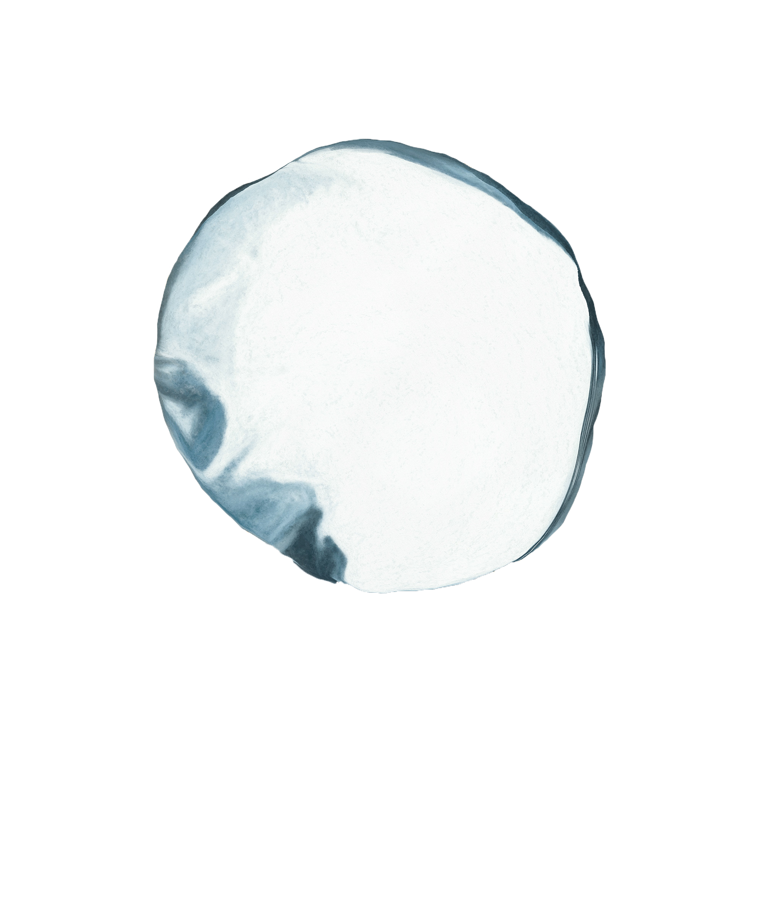

Inès Hamadi
Hello, my name is Inès and I'm a UX/UI designer. Trained as a UX/UI designer at UC Berkley Bootcamp. Skilled in Photoshop, Lightroom, HTML5, CSS and Xd adobe. Passionate about art, psychology, and design. Strenght in teamwork and user research I aim currently worked with my team in user research to develop a travel app, interviewing people, getting feedback from travelers and designing the app. Specializing in user research, usability testing, information architecture, and interaction design, I aim to create interfaces that bring users satisfaction and usability.
